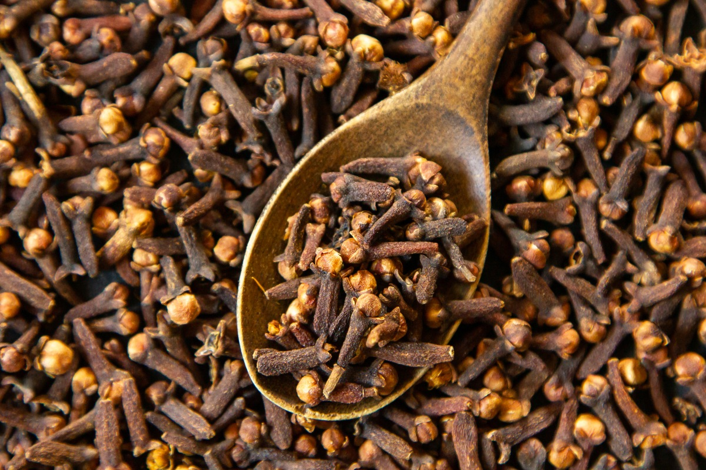

กานพลู
ไม้ต้น ขนาดเล็ก สูงประมาณ 4 – 12 เมตร ลำต้นลักษณะเป็นทรงพุ่มรูปกรวย มีกิ่งล่างเป็นจำนวนมาก มีกิ่งกระโดงหรือกิ่งใหญ่ประมาณ 3 – 5 กิ่ง เปลือกเรียบ ลำต้นมีสีเหลืองน้ำตาล
ใบ เป็นใบเดี่ยว ออกตรงข้ามกันเป็นคู่ๆ ลักษณะใบรูปขอบขนานเป็นมัน ปลายใบเรียวแหลม โคนใบสอบเรียว ขอบใบเรียบหรือเป็นคลื่นเล็กน้อย ใบอ่อนมีสีชมพูหรือสีส้ม และเมื่อแก่จะเปลี่ยนเป็นสีเขียว หนาและมัน มีกลิ่นหอม และมีจุดน้ำมันอยู่ทั่วไปบนใบ
ดอก ออกดอกเป็นช่อกระจุก ลักษณะคล้ายดอกชมพู่ เกิดบริเวณปลายกิ่งหรือปลายยอดหรือซอกใบ ช่อหนึ่งๆ ประกอบด้วยดอกย่อยประมาณ 10 – 15 ดอก กลีบเลี้ยงสีเขียวอมเหลือง มีสีแดงกระจาย เชื่อมติดกันเป็นรูปท่อ ปลายแยกเป็นแฉกรูปสามเหลี่ยมแกมรูปไข่ 4 กลีบ กลีบดอกสีขาว ร่วงง่าย เกสรตัวผู้จำนวนมาก ผลสดรูปไข่กลับแกมรูปรี สีแดงเข้ม ดอกตูมอ่อนจะมีสีเขียวและก่อนที่ดอกจะบานสีของดอกจะค่อยๆ จางลงจนเป็นสีเหลืองและสีชมพูเรื่อๆ ขณะที่ดอกตูมจะมีสีชมพูอมแดง
ผล เป็นผลเดี่ยวเนื้อหนา ผลที่สุกมีสีม่วงคล้ำคล้ายลูกหว้า
เมล็ด เป็นเมล็ดเดี่ยว มีลักษณะค่อนข้างนิ่ม ด้านหนึ่งของเมล็ดเป็นร่องลึกลงไป
นำเมล็ดเก็บใหม่ไปแช่น้ำ 3 ชั่วโมง
หลังจากครบ 3 ชั่วโมง ให้ลอกเอาเนื้อหุ้มเมล็ดออก และนำไปเพาะในกระบะเพาะ
หลังจากที่ต้นกานพลูงอกสูง 5-7 ซม. (ประมาณ 7 วัน) ให้ย้ายต้นกานพลูลงถุงชำ
หมั่นรถน้ำ ดูแลกานพลูจนอายุ 12 เดือน (ต้นสูง 50 ซม.)
เตรียมดินปลูกด้วยหลุมขนาด 50*50*50 ซม.
ตากดิน 7 วัน เพื่อกำจัดโรคและแมลงบางส่วน
ใส่ปุ๋ยคอก 5 กก. รองก้อนหลุมที่เตรียมไว้
ย้ายต้นกานพลูลงหลุม และกลบดิน
ทำไม้ค้ำเพื่อป้องกันลม และใส่ใบมะพร้าวหรือใช้วัสดุอื่นสร้างร่มเงาให้ในระยะแรก
สภาพแวดล้อม กานพลูเป็นพืชที่เติบโตได้ดีในเขตร้อนชื้นและชอบความชื้นสูง ชอบพื้นที่ที่มีฝนตกสม่ำเสมอตลอดปี หรือมีปริมาณน้ำฝนประมาณ 2,000 – 3,000 มิลลิเมตรต่อปี อุณหภูมิเฉลี่ยประมาณ 24 – 25 องศาเซลเซียส
แสง กานพลูนิยมปลูกร่วมกับต้นไม้อื่นๆ เช่น ต้นจันทน์เทศ ต้นหมาก เพื่อช่วยพรางแสงหรือให้ร่มเงา เพราะหากปลูกกานพลูในที่โล่งแจ้ง มีแสงมาก จะทำให้กิ่งกานพลูแห้งง่าย จนถึงอายุ 3 ปี จึงจะไม่ต้องอาศัยร่มเงา
น้ำ ควรมีการให้น้ำในระยะแรกที่มีการปลูก ในหน้าแล้งหรือช่วงที่ฝนทิ้งช่วง
ดิน กานพลูชอบดินร่วนปนทราย หน้าดินลึกมีอินทรรีย์วัตถุสูง มีการระบายน้ำได้ดี หากระบายน้ำได้ไม่ดีจพทำให้กานพลูสลัดใบและชะงักการเติบโต ความเป็นกรดของดินที่ต้องการอยู่ที่ 5.5-6.5 ph
ปุ๋ย กานพลูควรให้ปุ๋ยหลังจากปลูกได้ประมาณ 4 เดือน ควรใส่ปุ๋ยคอกหรือปุ๋ยหมักอัตราต้นละ ½ – 1 ปี๊บ และเมื่อต้นกานพลูอายุ 2 ปี ควรใส่ปุ๋ยคอก 1-3 ปี๊บต่อต้น ร่วมกับปุ๋ยสูตร 15-15-15 ปริมาณ 1-2.5 กก./ต้น ใส่ปีละ 2-3 ครั้ง
ใบ รสร้อน แก้ปวดมวน
เปลือกต้น รสร้อนปร่า แก้ปวดท้อง แก้ลม คุมธาตุ
ดอก รสเผ็ดร้อนปร่า เป็นยาแก้พิษโลหิต แก้ปวดท้อง แก้ลมเป็นเหน็บชา แก้พิษน้ำเหลือง แก้อุจจาระให้เป็นปกติ แก้เลือดออกตามไรฟัน แก้ปวดฟัน แก้หืด ละลายเสมหะ ดับกลิ่นปาก เป็นต้น ดอกเมื่อตากแห้งแล้วจะเป็นสีแดงน้ำตาล นำมากลั่นใช้ 0.12 - 0.3 กรัม จะเป็นยาแก้ท้องขึ้น ธาตุพิการ ขับผายลมในลำไส้ เป็นยาบำรุง
ผล รสร้อนปร่า เป็นตัวช่วยให้มีกลิ่นหอม นิยมใช้เป็นเครื่องเทศในการประกอบอาหาร
ใบ ขับลม แก้อาการจุกเสียดแน่นอนท้อง ท้องเฟ้อ บำรุงธาตุ บำรุงร่างกาย และรักษาอาการโรครำมะนาด
ควรเก็บในที่สะอาด เย็น ไม่อับชื้น มีอากาศถ่ายเทได้ดีหรือเก็บในห้องเย็น เก็บในภาชนะที่ปิดสนิท